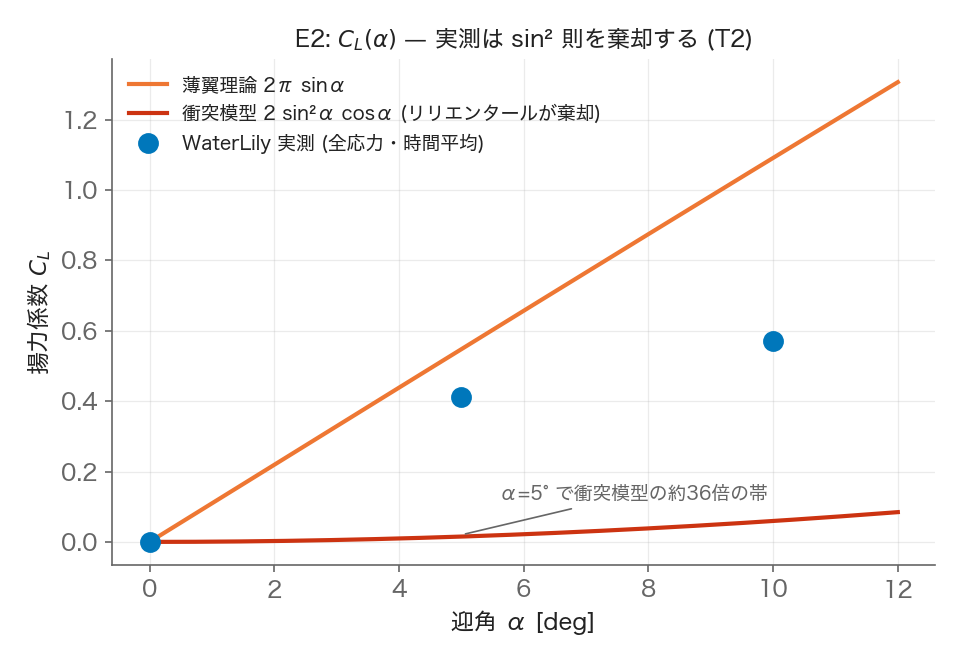
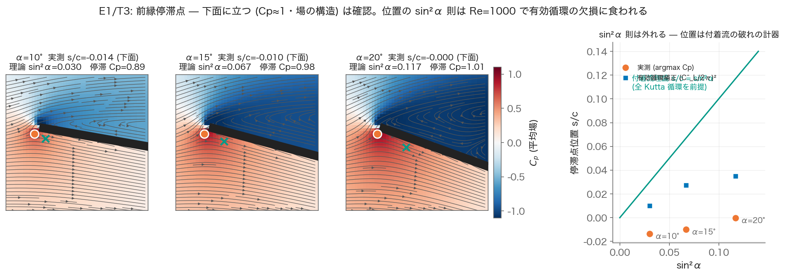
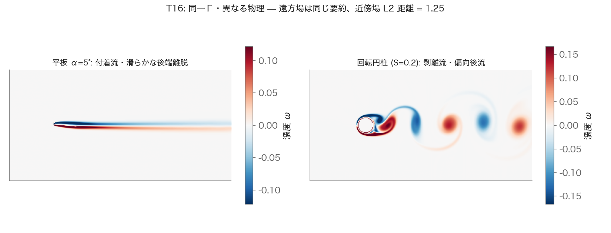
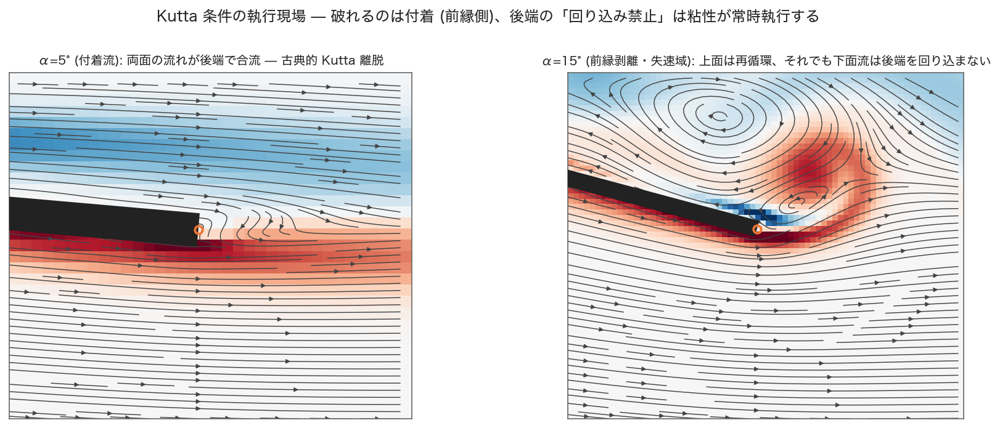
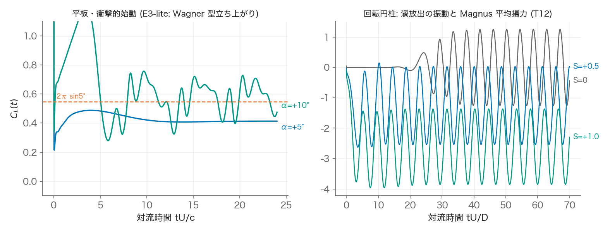
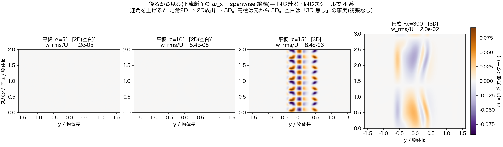
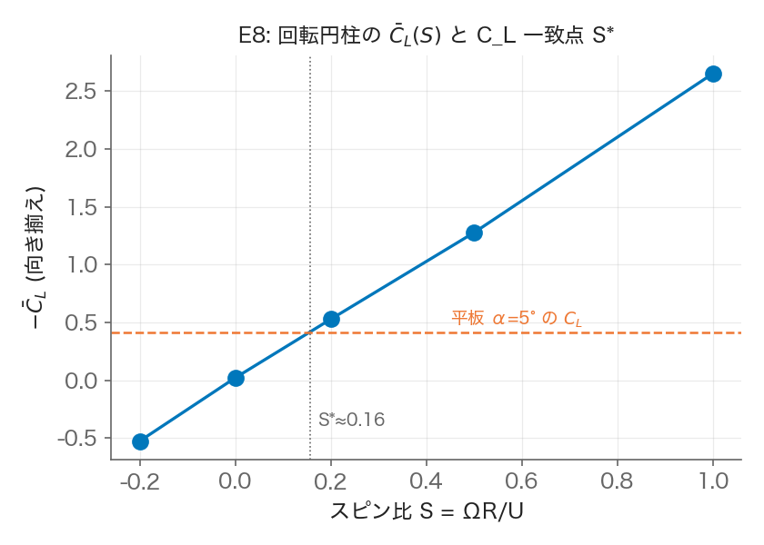

翼はなぜ飛ぶのか — 反証の先で、自分で考えるために#
今期の授業のまとめ / 初学者向け読み物
この資料の問い#
「飛行機はなぜ飛ぶか、実はまだよく分かっていない」——そんな話を聞いたことがあるかもしれません。半分は本当で、半分は誤解です。**物理は19世紀末にはほぼ分かっていました。**分からなくなったのは、そのあと100年かけて、私たちが説明の仕方をこじらせたからです。
いま、YouTubeには「飛行機はこうして飛ぶ」という間違った説明の動画が山のようにあります。そして最近になって、ようやくその間違いを正す動画もちらほら出てきました。これは良いことです。でも——この授業でいちばん考えてほしいのは、その先です。
間違いを反証しても、それだけでは本質にたどり着きません。「嘘を潰す」ことと「本当を理解する」ことは、別の作業です。この資料は、正しい答えを配る資料ではありません。反証の先で、どう自分で考えるか、そしてそのときAIに何ができるかを問う資料です。
1. 出発点は「測った人」だった — リリエンタール(1889)#
飛行の理論の原点は、数式ではなく測定です。
オットー・リリエンタールは、鳥の翼を長年観察し、回転腕装置(長い腕の先に翼をつけてぐるぐる回す)と自然の風の両方で、板が受ける力を系統的に測りました。1889年の『鳥の飛翔』にまとまっています。
彼がまず測ったのはただの平らな板でした。これが賢い。当時まだ影響力のあった古い理論(ニュートンに由来する、粒子が板に当たって跳ね返る描像)は、揚力について次を予言していました。
ここで \(C_L\) は揚力係数(揚力の大きさを表す無次元の数)、\(\alpha\) は迎え角(翼が風に対して傾く角度)です。中身は難しくありません。**「板の正面に飛び込んでくる空気の粒だけを数える」**と、この式になります。粒が板に当たって下にはね返る、その反動が揚力だ、という素朴なモデルです。
迎え角が小さいとき \(\sin\alpha \approx \alpha\) なので、この式はほぼ \(\alpha^2\)、つまり角度の2乗で効きます。角度を2倍にすれば揚力は約4倍、という予言です。
リリエンタールの平板データは、これをはっきり否定しました。実測では、小さい迎え角で揚力は角度の1乗にほぼ比例して立ち上がり、しかも古い理論よりずっと大きかった。正しい値(付着した流れのとき)は、あとで分かる通り
です。二つを比べてみましょう。迎え角 \(\alpha = 5°\) を代入すると:
理論 |
式 |
\(\alpha=5°\) での値 |
|---|---|---|
古い衝突モデル(ニュートン流) |
\(2\sin^2\alpha\cos\alpha\) |
約 0.015 |
正しい値(付着流) |
\(2\pi\sin\alpha\) |
約 0.548 |
**その差、およそ36倍。**桁が違います。これは測定誤差でごまかせる差ではありません。古い理論は、ただ小さいのではなく、決定的に間違っていた。

この図が第1節の全てです。下のほとんど平らな赤い線が、古い衝突モデル(\(2\sin^2\alpha\cos\alpha\))の予言。上の右上がりの直線が、正しい値(\(2\pi\sin\alpha\))。そして青い丸が、今学期この授業でコンピュータ計算した実測点です。青丸は、下の赤線から桁違いに離れ、上の直線の側にいます。これは130年前にリリエンタールが板を測って見た結果を、皆さん自身の計算で再現したものです。**「理論がこう言うから」ではなく、「測ったらこうだった」。**これが出発点です。
見方のヒント:青丸が上の直線にぴったり乗らず、少し下にいるのに気づきましたか。これは間違いではありません。計算に使った空気の「ねばり(粘性)」の効きや、板の厚みのせいで、現実は理想の直線より少しだけ揚力が小さくなる。「理論の直線」と「現実の点」のこのわずかなズレ自体が、次に学ぶことの入り口です。完璧に一致しないことに意味がある。
なぜこんなに違うのか。ひとことで言うと——古いモデルは「板に当たった空気」しか数えていなかったからです。実際には、翼は当たった空気だけでなく、そのまわりの広い範囲の空気を(圧力を通して)下向きに曲げています。数えるべき空気の量が、桁違いに多かった。ここが揚力理解の第一の核心です。
この授業のキーポイント① 「板が押すのは、板に当たった空気だけではない。」 揚力の大きさは、翼が動かす空気の量の広さで決まる。ニュートンの素朴なモデルは、この広がりを数え落として破れた。
そして大事なのは——**ニュートンの「作用・反作用」そのものは間違っていません。**破れたのは「当たった粒だけ数える」という勘定の仕方であって、「空気を下に押した反作用で浮く」という原理は、いまも完全に正しい。後で見る正しい説明も、この作用・反作用の上に立っています。
「流れが分かれる一点」を、目で見る#
もう一つ、計算結果を見ておきましょう。板の先端の近くには、流れが上下に分かれる一点があります(この点を「停滞点」と呼びます。そこだけ流れが止まっているので、圧力がいちばん高い)。迎え角を大きくしていくと、この点がどこへ動くか——見てください。

左の3枚は、迎え角を10°→15°→20°と上げたときの、板の先端まわりの流れです。赤いところが圧力の高い場所。迎え角を上げるほど、流れが分かれる点(白丸)が、板の下面のほうへ回り込んでいくのが見えます。
これは、実は素朴な「粒が当たる」モデルでは説明すらできない現象です。粒が板に当たるだけの世界には、「流れが二手に分かれる一点」なんてものは存在しません。分かれる点があるということは、そこに場としての圧力があるということ。つまりこの図は、「揚力は当たった粒の話ではなく、板のまわり全体の圧力の場の話だ」という第1節の核心を、一枚で示しています。
手のひらで思い出してください:車の窓から手を平らに出して、少しだけ上に傾けると、風が手を押し上げます。あのとき、手のひらの下側に風が強く当たる感じがあったはずです。あれがまさに、この図の「停滞点が下面に回り込む」現象を、皮膚で感じていたということです。(この体感の話は、第7節でもう一度出てきます。)
(数式はここまでです。以降は言葉で考えます。)
補足:ライト兄弟の「検算」(1901)#
面白い後日談があります。ライト兄弟は、リリエンタールのデータを信じて設計したグライダーが思ったほど飛ばず、自分で風洞を作ってデータを取り直しました。すると食い違いの主犯は、リリエンタールの測定ミスではなく、当時みんなが使っていた古い換算係数が大きすぎたことだと突き止めます。「先人のデータを疑って測り直したら、データはだいたい正しく、共通で使っていた定数のほうが間違っていた。」——皆さんがライブラリや教科書の数値を鵜呑みにするときの、良い戒めです。
2. いちばん有名な「もっともらしい嘘」と、その反証#
さて、YouTubeや教科書でいちばんよく見る説明はこれです。
「翼は上面が反って長く、下面が平らで短い。前で分かれた空気は、後ろの縁で再び出会わなければならない。上面は道のりが長いから、その分速く流れる。速い流れは圧力が低い(ベルヌーイ)。だから上面が吸い上げられて、揚力が出る。」
とても、もっともらしい。だからこそ何十年も教科書に載り、博物館の展示になり、航空会社の安全ビデオにまでなりました。そして、間違っています。
どこが間違いか。「後ろの縁で出会わなければならない」という部分に、**何の根拠もありません。**前で分かれた2つの空気の粒は、後ろで再会する約束などしていない。実際に測ると(風洞でも計算でも)、**上面の空気は下面の空気よりずっと速く、後ろの縁に先に着いてしまいます。**再会しないのです。最近出てきた「修正動画」の多くは、まさにこの様子を可視化して、「ほら、出会っていないでしょう」と示します。良い反証です。
でも——ここからが、この授業の本題です。
この反証は、実は何の本質にも触れていません。
考えてみてください。反証が示したのは「上面のほうがもっと速い(嘘の予想より速い)」ということでした。つまり嘘の説明は、間違っているだけでなく、揚力を小さく見積もりすぎていたのです(NASAの解説も「等時間通過で計算すると実際の揚力よりずっと小さくなる」と述べています)。嘘を潰したあとに残るのは、「じゃあなぜ上面はそんなに速いのか」「なぜ翼は空気をそこまで曲げられるのか」という、元の問いそのものです。
反証は、間違った答えを消しただけ。本当の問いは、消される前と同じ場所に、まだ立っています。
この授業のキーポイント② 「嘘を反証すること」と「本当を理解すること」は別の作業。 もっともらしい嘘を一つ潰しても、それは掃除であって、理解ではない。反証動画を見て「なるほど、あれは嘘だったのか」で止まると、あなたは何も分かっていない。反証の先にある元の問いに、あらためて向き合ってほしい。
**そこで、あらためて問い直します。**上下の道のりの長さも、空気の再会も忘れてください。そもそも——平らな板でも、迎え角さえつければ揚力は出ます(第1節で見た通り)。上面と下面の道のりが同じでも飛ぶのです。では、揚力を生んでいる本当のものは何でしょうか。ここから、自分で考えてみてください。
3. いちばん素直な考え方 — 「曲げた反作用」で考える#
ヒントとして、一つの筋の通った考え方を示します(ただしこれも「暗記する答え」ではなく「考える出発点」として読んでください)。
東京大学生産技術研究所の加藤千幸先生(スーパーコンピュータで流体を解く研究の第一人者)の説明が、いちばん素直です。
流れには、物体の表面に沿って流れる性質がある(水でも空気でも)。
翼はこの性質を使って、空気の流れを下向きに曲げる。
流れの向きを変えるには力が要る(止まっているものを動かすのに力がいるのと同じ)。
翼が空気を下に押す。その反作用として、空気が翼を上に押す。これが揚力。
第1節で見た「作用・反作用は正しい」が、ここで生きます。破れたのは勘定の仕方だけで、原理はこれでいい。
大事なのは順序です。加藤先生は、上面が低圧・下面が高圧という「圧力差」を、このあとで、シミュレーションの結果として見せます。圧力差は原因の物語ではなく、計算して出てきた結果なのです。この順序なら、第2節の「等時間通過」の罠には決して落ちません。
この授業のキーポイント③ 「圧力差で飛ぶ」も「反作用で飛ぶ」も、同じ一つの力を、違う面で数えているだけ。 翼の表面で数えれば「圧力」、翼を囲む大きな箱で数えれば「下向きに曲げた空気の反作用」。同じ買い物を、レシートで見るか財布の減りで見るかの違い。どちらが本当の原因かを争うのは、意味がありません。
「船の舵」で考えると腑に落ちる#
加藤先生の説明には、実は**「翼」に特有の話が一つも出てきません。「表面に沿う → 曲げる → 反作用」、これだけ。だから同じ説明が、そのまま船の舵**に使えます。「下向き」を「横向き」に、「空気」を「水」に置き換えるだけ。舵は水の流れを横に曲げ、その反作用で船尾を押す。ヨットの帆も、水中翼も、同じ物理です。
しかも舵が効くのは「水を堰き止めて押されるから」ではなく、主に舵の裏側(吸い込み側)の低い圧力のため。**船は水に押されるより、水に吸われて曲がる。**飛行機が翼の上面の吸引で吊られているのと、同じ構造です。「飛行機の翼と船の舵は同じ物理だ」と言えたら、揚力を「翼という特別な形の魔法」から解放できています。
「表面に沿って曲げる」を、目で見る#
言葉だけだと分かりにくいので、実際の計算結果を見てください。左が、迎え角をつけた平らな板のまわりの流れ。右が、回転する円柱(野球の変化球のように回りながら進むボールだと思ってください)のまわりの流れ。色は流れの回転の様子を表しています。

**左の平板を見てください。**流れが板の表面にぴったり沿って、うしろへ細く長く、きれいに流れています。これが第3節で言った「表面に沿って流れる → 曲げる」の姿です。乱れがない。これが揚力を生む「付着した流れ」です。
**右の円柱を見てください。**流れが表面についていけず、ちぎれて、うしろに渦をボコボコとばらまいています。こちらも力は出るのですが、まったく違うやり方で出しています(これが変化球が曲がる仕組みで、飛行機の翼とは別の話です)。
この二つの図には、実は仕掛けがあります。左と右は、揚力の大きさを同じに揃えてあります。さらに、遠くから大まかに見た「流れの回り具合」を表す数字(この先の授業で「循環」として習います)も、両者でほぼ同じになるよう選んであります。遠くから見た要約の数字は同じ。なのに、近くで見た中身はまったく別物。——この事実を覚えておいてください。この先「循環という数字が揚力を生んでいる」という説明に出会ったとき、この2枚の図が効いてきます。同じ数字でも中身が違うなら、その数字が本当の「原因」のはずがない。それは結果を要約しただけの数字です。いまは「へぇ」で構いません。でも、この違和感は大事にしてください。
「後ろの縁」で何が起きているか — 失速しても揚力が消えない理由#
もう一つだけ、後ろの縁(後端)を拡大した図を見せます。第2節で潰した嘘は「上下の流れが後端で出会う」でした。では実際、後端では何が起きているのか。

左(迎え角5°、正常な状態)では、上面と下面の流れが後端でなめらかに合流して、うしろへ流れ去っています。「後端で出会う」という嘘は、道のりの長さの話としては間違いですが、「後端で流れがきれいに離れる」という事実自体は起きている。ここが紛らわしいところです。
右(迎え角15°、失速した状態)を見てください。迎え角を上げすぎると、上面の流れが表面についていけず、渦を巻いて逆流(再循環)しています。これが「失速」です(実機の3次元の翼では、ここで揚力が大きく落ちます。ちなみにこの計算のような2次元の板では、前縁の渦の助けで平均の揚力はまだ伸びるのですが、力が激しく波打って、安定して飛べる状態ではなくなります——第5節で見る「非定常」の入り口です)。でも——よく見てください。上面がこんなに乱れていても、下面の流れは、後端を”下から上へ”回り込んではいません。
これが大事な点です。よく「失速したら揚力はゼロになる」と誤解されますが、実際には失速しても揚力はまだ残っています(落ちるだけ)。なぜか。後端の「下面の流れが裏側へ回り込まない」という決まりごとが、流れのねばり(粘性)によって、失速していても守られ続けているからです。壊れるのは前のほう(前縁で流れが剥がれる)であって、後端の決まりごとは最後まで粘り強く守られる。
ここで気づいてほしいこと 第2節では「後端で出会う」という嘘を潰しました。でも、後端で何かが起きているのは本当だったのです。嘘だったのは「道のりが長いから速くなって出会う」という理由づけであって、「後端で流れがなめらかに離れる」という現象ではない。 反証するときは、嘘の”理由”と、たまたま隣にあった”本当の現象”を、丁寧に切り分ける必要があります。全部まとめて捨ててしまうと、本当のものまで失う。これも、AIの答えを検証するときに効く技術です。
4. 寄り道:ではなぜ、100年もこじれたのか#
第3節で、いちばん素直な考え方(曲げた反作用)にたどり着きました。こんなに素直なのに、なぜ教科書はここまで来るのに100年もかかり、いまだにこじれた説明が生き残っているのか。少し寄り道して、その理由を見ておきます。**犯人は「循環」という考え方と、「マグヌス効果」という有名な現象です。**ただし——先に言っておくと、どちらも間違ってはいません。間違ったのは、それらの使われ方でした。
「循環」は、計算できなかった時代の発明だった#
20世紀のはじめ、揚力を数式で計算したいという強い必要がありました。飛行機は現実に飛び始めていて、設計には揚力の予測が要る。ところが、当時は流れそのものを解く方法がありませんでした(空気のねばりを含んだ本当の方程式を数値で解けるようになるのは、1970年代以降。コンピュータの登場を待つしかなかった)。
その間の約70年、設計者は手回し計算機と製図板で、今日飛ぶ飛行機を今日設計しなければならなかった。そこで発明されたのが循環という考え方です。ざっくり言うと、「翼のまわりの流れの非対称さ」を たった1個の数字に押し込めて、その数字さえ求めれば揚力が計算できる、という便法です。これが驚くほどうまくいった。翼の設計が、紙と鉛筆でできるようになった。
**これは称賛すべき発明でした。**計算機のない時代に、複雑な流れを1個の数字に畳んで、飛行機の設計を可能にした。天才的な圧縮技術です。循環そのものは、少しも悪くありません。
問題は、この「計算のための便利な数字」が、いつのまにか「揚力を生む原因」として教えられるようになったことです。第3節のfig_T16を思い出してください。平板と回転円柱は、循環という数字が同じでも、中身はまったく別物でした。同じ数字で中身が違うなら、その数字が原因のはずがない。循環は、流れを要約した結果の数字であって、揚力を生んでいる原因ではないのです。
「上が速いから低圧、だから吸い上げられる」が原因の順序を取り違えた説明(第2節)だったのと、まったく同じ取り違えが、もう一段深いところで起きていた。「循環があるから揚力が出る」——これも順序が逆さまです。正しくは「揚力が出る流れには、必ずこれだけの循環が伴う」。原因と結果を取り違えると、堂々巡り(同義反復)になります。
ついでに、ありがちな誤解をもう一つ先回りして潰しておきます。循環は、渦の数を数えている数字ではありません。今回の計算に、ちょうど良い反例のペアがあります。迎え角5°の平板は、渦を一つも後ろに流しません(流れは静かに落ち着いたまま)——それでも揚力はしっかり出ています。逆に、回転していないただの円柱は、渦を絶え間なくばらまき続けます——それなのに、揚力は平均すればゼロです。渦ゼロで揚力あり。渦だらけで揚力ゼロ。「渦がたくさん見える=揚力が大きい」では、全くないのです。循環という数字が要約しているのは渦の個数ではなく、翼のまわりの流れ全体の**偏り(非対称さ)**です——そしてそれは、やはり結果の要約であって、原因ではありません。
なぜ、その取り違えが100年も生き残ったのか#
理由は、物理ではなく人間の側にあります。
**教科書は教科書から書き写されます。**先生は、自分が習った順序で教える。だから「これは計算のための便法だった」という但し書きが、世代を追うごとにポロポロ落ちていき、便法だけが「第一原理」の顔をして残った。
計算できなかった時代には、循環が唯一の計算手段でした。だから当時は、それを中心に教えるのが正当だった。ところが計算機で流れそのものを解けるようになった後も、教え方だけが慣性でそのまま残ってしまった。
つまり、停滞したのは物理ではなく、説明の作法です。物理は19世紀末のリリエンタールの時点でほぼ分かっていた。その後の100年は、便利な道具が原因の座に居座り、その居座りが教科書の惰性で固定された時代だったのです。
マグヌス効果 — 「循環の実例」という看板の倒錯#
もう一人の”犯人”がマグヌス効果です。これは、回転しながら飛ぶボールが曲がる現象(サッカーのカーブ、野球の変化球、卓球のドライブ)。この「回転する円柱・球」が、教科書で長らく**「循環の目に見える実例」**として使われてきました。「ほら、回転が循環を作り、循環が力を生むでしょう」と。
ところが、ここに倒錯があります。第3節のfig_T16の右側を、もう一度見てください。回転する円柱の流れは、表面についていけずにちぎれて渦をばらまいていました。飛行機の翼(左側)の、表面にきれいに沿った付着流とは、似ても似つかない。実は、回転する球の力学は、飛行機の翼とはまったく別の仕組み(流れの剥がれ方の左右差)で力を出しているのです。
つまり——**教科書は、飛行機の翼から最も遠い特殊なケース(回転球)を、翼の説明の看板役に選んでしまった。**しかも、その看板が「循環という数字が力を生む」という取り違えを、いっそう”目に見える形で”補強してしまった。回っているものを見せられると、「回転=循環=力」と、いかにも因果があるように錯覚してしまうからです。
この授業のキーポイント(寄り道版) 循環もマグヌスも、それ自体は正しい。停滞を生んだのは、「計算の便利な要約」を「本当の原因」と取り違え、その取り違えを教科書の慣性で100年間コピーし続けたこと。 皆さんへの教訓:**便利な数字に出会ったら、「これは原因か、それとも結果の要約か」と一度立ち止まる。**この問いは、循環に限らず、これから出会うあらゆる分野の”便利な指標”に効きます。
なお、皆さんはこの授業で、循環という中間の数字を飛ばして、いきなり流れそのものを計算しました(第1節や第3節の図がそれです)。100年前の人が手に入れられなかった道具を、いま皆さんは持っている。だからこそ、循環を歴史的な偉業として敬意を払いつつ、正しい棚に戻すことができるのです。
5. 自分で考える課題 — クマバチとバジリスク#
ここからは、**答えを配りません。**皆さん自身に考えてほしい二つの問いです。どちらも、良い資料が最近出始めています。まず自分で調べ、自分で考え、それからAIと議論してください。
課題A:なぜ「クマバチは理論上飛べない」と言われるのか#
「クマバチ(マルハナバチ)は、航空工学の理論では飛べないはずなのに飛んでいる」——有名な俗説です。まず問うべきは、この俗説自体が正しいのかです。
考えるための足がかり(答えではありません):
「飛べないはず」と計算したとき、その計算はどんな翼を仮定していたでしょうか。飛行機の翼のような、動かない・付着した流れを仮定していたのでは?
昆虫の翅は、飛行機の翼と同じように流れを扱っているでしょうか。それとも違うやり方をしている?
第1節で「翼は当たった空気だけでなく広い範囲を曲げる」と学びました。昆虫は、羽ばたきで自分で渦を作り、その渦を利用しているという研究があります。渦は「損失」として避けるものだと習うのに、昆虫はそれを利用しているらしい。これは何を意味するでしょうか。
問いを整理すると:「クマバチは飛べないはず」という主張が仮定していたモデルは、そもそもクマバチに当てはまるモデルだったのか? 俗説は、クマバチの謎ではなく、間違ったモデルを当てはめた人間の側の謎なのかもしれません。調べて、考えてみてください。
課題B:なぜバジリスク(トカゲ)は水面を走れるのか#
バジリスクは、水面を走って渡るトカゲです。人間なら沈むのに、なぜ走れるのか。
考えるための足がかり(答えではありません):
静かに水面に立とうとしたら、当然沈みます。バジリスクは止まっていない。この違いは何を意味するでしょうか。
足で水を叩くとき、水を下向きに加速しています。第3節の「曲げた反作用」と、どう関係するでしょう。
足を引き抜くとき、水は足にすぐには追いつけず、**空洞(へこみ)**ができます。この空洞は、揚力の話に出てきた「吸い込み側の低い圧力」と似ていないでしょうか。
決定的なのはタイミングです。足が沈む前に引き抜けるかどうか。これは「止まっていたら負ける」構造です。飛行機の翼が止まっていても飛べるのと、どこが違うでしょうか。
問いを整理すると:**飛行機は「定常(時間が止まっても成り立つ)」の世界の住人、バジリスクは「非定常(動き続けることでしか成り立たない)」の世界の住人。**同じ「流体を下に押した反作用」でも、時間の使い方がまるで違う。クマバチもこちら側です。この違いを、自分の言葉で説明できるようになってください。
この授業のキーポイント④ 飛行機の翼は「渦を作らない」技術。昆虫やバジリスクは「渦や非定常を使いこなす」技術。 どちらも「流体を押した反作用で浮く」点では同じ(第1節・第3節)。違うのは時間の使い方です。この一段深い共通構造が見えたら、あなたは揚力を「暗記」ではなく「理解」しています。
「定常」と「非定常」の違いを、計算結果で見ておきましょう。横軸は時間です。

左の平板(飛行機の翼の仲間)を見てください。動き始めた瞬間こそ揺れますが、すぐに一定の値に落ち着いて、そのまま平らに続きます。これが「定常」。時間が止まっても揚力はそこにある。飛行機が安定して飛べる理由です。
右の回転円柱(変化球やバジリスク側の仲間)を見てください。揚力がいつまでも波打って、落ち着きません。これが「非定常」。流れがちぎれて渦を出し続け、力が時間とともに変動する。バジリスクが「止まったら負ける」のは、この世界の住人だからです。同じ図の中に、二つの世界が並んでいます。
ただし一つだけ注意——同じ非定常の世界にも、揺すられる側と使う側があります。円柱は流れに勝手に揺すられているだけ。バジリスクや昆虫は、過渡(一瞬しか続かない状態)を自分で作り出して、使いこなしています。課題AとBで探してほしいのは、この「使う側」の工夫です。課題Aと課題Bを考えるとき、この「落ち着く/落ち着かない」の違いを思い出してください。
6. 最後の告白 — ここまでの図は、ぜんぶ「平らな世界」の計算でした#
この資料には、まだ言っていない仮定が一つあります。ここまでの図(E1・E1b・E2・T16・E3、そして付録のE8も)は、すべて2次元の計算です。翼を真横から輪切りにした断面だけを計算し、奥行き方向(翼が長く伸びていく方向)には何も変化しないと仮定していました。いわば、同じ断面が奥までずっと続く「平らな世界」です。
この仮定は、正直だったのでしょうか。確かめる方法は一つしかありません。仮定を外して(奥行きを足して)、計算し直すことです。そこで同じ道具で、今度は奥行きを持った3次元の計算をやり直し、流れを後ろから眺めてみました。奥行き方向に渦が生まれていれば後ろ姿に模様が見え、流れが2次元のままなら**何も見えない(真っ白)**はずです。4つの場合を、同じ物差しで並べます。

結果です。
平板・迎え角5°(ふつうに飛んでいる状態)——後ろ姿は真っ白。奥行きを足しても、流れは2次元のままでした。ここまでの図は、嘘をついていなかったのです。
平板・迎え角10°——渦を後ろへ次々と流し始め、力も波打ちます(第5節の「非定常」の仲間入り)。ところが後ろ姿は——まだ真っ白。渦は出ているのに、その渦は奥行き方向にまっすぐ揃った、いわば「海苔巻き」のような2次元の渦なのです。渦を出すことと、3次元になることは、別の出来事でした。
平板・迎え角15°(失速)——ここで初めて、後ろ姿に模様が現れます。まっすぐだった渦の棒が、奥行き方向に波打ち、ちぎれ、絡まり始めた。本物の(3次元の)渦は、流れの剥がれ——失速——が連れてくるのです。
円柱——最初から模様だらけ。丸くて鈍い形は迎え角に関係なく流れが剥がれるので、はじめから3次元の世界の住人です。
まとめると:飛行機がふつうに飛んでいる状態(付着した流れ)では、2次元の計算は驚くほど正直です。だから、この資料の図は入り口として信用できます。けれど、失速・丸い物体・本物の乱れた渦は、3次元でなければ存在すらできない。ダ・ヴィンチが描いた水の渦のあの絡まりは、実は平らな紙の世界には住めない生き物なのです。
そしてもう一つ。本物の飛行機の翼には、この計算にまだ入っていない別の3次元があります——翼には「端」があることです。ここで計算した翼は、奥行き方向に端のない(無限に長い)翼でした。実物の翼は有限で、翼の端では下面の高い圧力が上面へ回り込んで、翼端渦という渦を引きずります(いま見た失速の渦とは別物です。混同しないでください)。翼端渦は揚力の「漏れ」で、燃費を悪くします。旅客機の翼の先が上向きに折れ曲がっているのを見たことがあるでしょう——あのウイングレットは、この翼端渦への対策です。「端のある翼」の計算は、この資料の続きの宿題として残しておきます。
この授業のキーポイント⑤ シミュレーションは仮定の塊。そして、仮定が正直な範囲と嘘になる範囲は、仮定を一つ外して計算し直せば、自分で確かめられる。 「反証」は他人の説明に向けるだけの道具ではありません。**自分の計算にも向けるのです。**2次元の図を見せられたら、「奥行きを足しても同じですか?」と問える人になってください。
7. 根本の問い — そのとき、AIは何を支援してくれるのか#
ここまでの流れを振り返ってください。
もっともらしい嘘があった(等時間通過)。
反証動画がそれを潰した。でも反証は本質ではなかった。
元の問い(なぜ曲げられるのか)に戻り、素直な考え方(曲げた反作用)を得た。
さらに、便利な数字(循環)や有名な現象(マグヌス)が原因と取り違えられて、説明を100年こじらせたことも見た。
自分の計算の隠れた仮定(2次元)まで疑って外し、正直だった範囲と嘘になる範囲を、自分の目で確かめた。
そしていま、その考え方を、クマバチやバジリスクという未知の問題に自分で当てはめようとしている。
この6段階のどこで、AIは役に立つでしょうか。そして、どこで役に立たないでしょうか。これが、この授業のいちばん根本的な問いかけです。
正直に考えてみましょう。
AIは、嘘を反証してくれます。「等時間通過は間違いだ」と、AIは即座に教えてくれる。でも、それは第2節で見た通り、掃除であって理解ではない。AIが反証を代わりにやってくれると、あなたは「反証で満足して止まる」危険がもっと大きくなります。
**AIは、もっともらしい説明をいくらでも生成できます。しかも、間違った説明も、正しい説明も、同じくらい流暢に。だからAIの答えを、そのまま信じてはいけない。**この資料で「答えを配らない」のは、そのためです。実際、AIに揚力を尋ねると、第4節で見た「循環が揚力を生む」という取り違えた説明を、平気で返してくることがあります(教科書がそう書いてあるので、AIもそう学んでいる)。AIも、人間と同じ100年の慣性を引き継いでいるのです。だからこそ、鵜呑みにせず、あなたの側が「それは原因か、結果の要約か」と問い返せるかどうかが問われます。
では、AIは何に使えるのか。——議論の相手として使えます。あなたがクマバチについて仮説を立てたとき、「その仮説は、どんなモデルを仮定している?」「その仮定が破れる場合はある?」と、AIに突っ込ませることができる。あなたの考えの穴を探させるのです。答えをもらうのではなく、自分の考えを鍛える砥石として使う。
そして最後に——AIに、あなたの代わりに考えさせてはいけません。クマバチの問いに「間違ったモデルを当てはめた人間の側の問題では?」と気づく、あの瞬間は、あなたのものです。AIはそこへ近道を教えられるけれど、近道で着いた場所は、自分で歩いて着いた場所ほど、あなたのものにはならない。
この授業がいちばん伝えたいこと AIは、あなたの思考を速くする道具にも、あなたの思考を肩代わりして奪う道具にも、どちらにもなります。どちらになるかは、あなたがAIに何を頼むかで決まります。 「答えを教えて」と頼めば、思考は奪われる。「私の考えの穴を探して」と頼めば、思考は鍛えられる。この使い分けができる人が、これからの学び手です。
砥石に当てる刃は、どこから来るのか — 失われた掌の話#
AIを「砥石」として使え、と言いました。でも、砥石は刃がなければただの石です。**AIの答えに違和感を持つには、突き合わせる”自分の側の何か”が要ります。**その”何か”は、どこから来るのでしょうか。
少し前の世代には、それがありました。車や電車の窓から手を出せばよかったのです。手のひらを風に立てて、少し傾ける。すると風が手を上に、そして後ろに押す。角度を変えれば力の向きが変わる。あれは、この資料の第1節と第3節そのものでした——平らな手のひら(平板)でも、傾ければ(迎え角)揚力は出る。しかも力は「押し」と「吸い」の両方から来る。窓の外の手は、リリエンタールの実験装置の、無料の個人版だったのです。
だから、たとえその世代が「上面は道のりが長いから」という嘘(第2節)を教わっていても、彼らの掌には**反証データがいつでも触れられる形で存在していました。**平らな手でも傾ければ揚力が出るのだから、「道のりの長さ」の話は掌の感覚と合わない。教科書と体感がずれたとき、体感を信じ直す手がかりが、文字通り手元にあった。
問題は、その体感が失われた後です。窓は閉まり、車は静かになり、誰も手を出さなくなった。すると揚力は、体で触れられないもの、教科書と動画の中だけにあるものになります。
AIと共存する世代への、いちばん強い教訓 もっともらしい嘘が本当に強くなるのは、それを体感で殺せる人がいなくなってからです。 昔は、誰かが等時間通過説を語っても、掌の記憶がそれを黙って否定できた。その掌が失われた世代では、嘘を疑うきっかけそのものが、体の側から供給されなくなる。反証する以前に、疑うための足場が消えている。——これはAIの時代に、そっくり当てはまります。AIがどれだけ流暢に間違えても、それに違和感を持つための”自分の掌”を持っていなければ、あなたは嘘を嘘と気づけません。
だからこそ、この授業で皆さんに平板を自分で計算させたのには、可視化以上の意味があります。窓から手を出せなくなった世代に、迎え角と揚力の対応を——手のひらの代わりに、自分で動かすコードと図で——取り戻してもらうためです。E1の停滞点の図を自分で回して「迎え角を上げたら停滞点が下面に動いた」と目で見る。あれは、失われた掌の感覚を、計算機の中に作り直す作業でした。**AIに答えを描かせるのではなく、AIと一緒に自分の掌を作り直す。**それが、砥石に当てるための刃を、あなたが自分で鍛える方法です。
8. まとめ#
揚力の物理は、リリエンタールが測った時点でほぼ手に入っていました。その後の100年は、第4節で見た通り、計算できない時代の便法(循環)や有名な現象(マグヌス)が、いつのまにか原因の説明の座に座り、教科書の慣性で固まった時代です。物理の停滞ではなく、説明の停滞でした。
いま、反証動画がその停滞を崩し始めています。良いことです。でも、反証は入り口にすぎません。皆さんに持ち帰ってほしいのは、揚力の公式ではなく、次の態度です。
**理論より先に測る/計算する。**都合の悪いケースをわざと先に見る(リリエンタールの平板)。
**嘘の反証で満足しない。**反証は掃除、理解は別の作業。潰した先の元の問いに戻る。
便利な要約を、原因と取り違えない。「圧力差」も「反作用」も、同じ力の別の数え方。「循環」も、揚力を生む原因ではなく、結果を要約した数字。便利な数字に出会ったら一度立ち止まる。
**未知の問題に、自分で当てはめてみる。**クマバチ、バジリスク——答えは配られない。
AIを、答えの供給源ではなく、思考の砥石として使う。「穴を探して」と頼めるかどうか。
**疑うための”自分の掌”を持つ。**昔は窓から手を出せば揚力を体で知れた。それを失った世代は、自分で計算し、自分で図を回して、疑うための足場を作り直す。AIがどれだけ流暢に間違えても、違和感を持てる自分でいること。
**自分の計算の仮定も、外して検算する。**この資料の図も、途中まですべて「2次元」という隠れた仮定の上にあった(第6節)。仮定を一つ外して計算し直せば、それが正直だった範囲と嘘になる範囲を、自分の目で確かめられる。反証は、他人にだけ向ける道具ではない。
最後にひとこと。渦は美しい。レオナルド・ダ・ヴィンチは水の渦を執拗にスケッチしました。でも彼のヘリコプターは飛びませんでした。渦(=損失)に見とれていると、本質を見失う。リリエンタールは渦を描かず、平板を測って、飛んだのです。そして——**AIに渦の絵を描かせて満足するのか、AIと一緒に平板を測りに行くのか。**それを選ぶのは、皆さんです。
この資料の図について#
本文の図(E1・E1b・E2・T16・E3、そして第6節の3次元比較)は、すべてこの資料のために、授業で使うのと同じ道具(WaterLily.jl)で計算した実際の結果です。教科書から借りた完成品ではありません。再現用のコードと設定は一式公開してあり、皆さんも同じ図を自分の手で作り直せます——そこから始めるのが、この授業のやり方です。第2節で潰した「もっともらしい嘘」も、第6節の「2次元は正直だったか」の検算も、こうして自分で流れを計算すれば、誰でも自分の手で確かめられます。それが、失われた掌の代わりに皆さんが手にした道具です(第7節)。
もう一枚、発展的な図があります(下)。回転する円柱の「回転の速さ」を横軸に、揚力の大きさを縦軸に取ったものです。点線は、平板を迎え角5°にしたときの揚力の高さ。回転の速さをうまく選ぶと、平板とちょうど同じ揚力になる点があることが分かります(縦の点線が交わるところ)。第3節の2枚組(T16)は、まさにこの「同じ揚力に揃えた」ペアを、近くで見比べたものでした。興味があれば、なぜ「まったく違う形・違う仕組みなのに同じ揚力の点が存在するのか」を考えてみてください。これも「循環という数字は要約にすぎない」という話につながります。

もっと知りたい人へ(自分で調べる出発点)#
リリエンタール『鳥の飛翔』(Der Vogelflug als Grundlage der Fliegekunst, 1889)— 測定から始めた原点。
加藤千幸 先生 授業ビデオ「飛行機に作用する力と翼の関係を学ぼう」(2016)— 素直な「曲げた反作用」の説明。
「等時間通過説」の反証 — NASA Glenn Research Center の解説ページ、および H. Babinsky の実演(煙で上下の流れが再会しないことを示す有名なデモ)。まず自分で探してみること。
クマバチ / 昆虫飛翔 — 「前縁渦(leading-edge vortex)」で検索。羽ばたきが渦を”使う”仕組みの資料が近年増えている。
バジリスク — 「basilisk lizard water running」で検索。水面走行の力学(叩きと引き抜きのタイミング)の研究がある。
松田卓也「飛行機はなぜ飛ぶのか、まだ分からない??」(あいんしゅたいん, 2013)— 反証の好記事。ただし「循環を説明に使う場面」と「循環を数式の便法と認める場面」が混ざっている点に注意して読むと、いっそう勉強になる。
(この資料は初学者向けの読み物です。第1節の数式より先の理論的な扱いは、別途の技術ノートを参照してください。)
改訂記録#
2026-07-10 初版(claude.ai Fable 起草)— 題「130年の回り道と、いま計算でできること」
2026-07-10 改稿(claude.ai)— 題を「反証の先で、自分で考えるために」に変更、§6 拡充(失われた掌)ほか全面改稿
2026-07-10 実装側修正(Claude Code、計算実測との整合 review 5 点):
§3 失速の記述を実測と整合化 — 「失速で揚力は大きく落ちます」は本資料の 2D 計算と矛盾(実測 C̄_L は 0.411(5°)→0.571(10°)→1.042(15°) と前縁渦の増強で伸び続ける)。「実機の 3D 翼では大きく落ちる/この 2D 計算では平均は伸びるが激しく波打つ」に分離
E1 図 alt テキスト — 「古い理論の予想線」→「付着流理論(理想)の予想線」(第 4 パネルの緑線は sin²α=付着流理論で、§1 の衝突モデルとは別物。混同の芽を除去)
図の出自の記述を現在真な形に — 「皆さんと同じ道具で計算した」→「授業で使うのと同じ道具で計算・コード公開・再生成可能」(学生の再生成演習は今後の運用判断)
§5 に非定常の内訳を一行追加 — 揺すられる側(円柱・受動)と使う側(バジリスク・昆虫・能動)の区別。課題 A/B の足がかり
書名の統一 — 『鳥の飛翔術』→『鳥の飛翔』(Der Vogelflug als Grundlage der Fliegekunst, 1889)、本文 §1 と一致させた
計算の一次資料:
experiments/waterlily-lift/results/oracle_report.json・図の再現手順は同ディレクトリ README。2026-07-11 3次元拡張(Claude Code、初 3D ラン成果の反映):
新 §6「最後の告白 — ここまでの図は、ぜんぶ『平らな世界』の計算でした」を追加 — 円柱(Re=300)と平板(迎え角 5°/10°/15°)の 3 次元計算(WaterLily.jl + Metal・約 700 万格子)で「2 次元の仮定が正直だった範囲」を検算した成果を反映。核心は**「渦を出すことと 3 次元になることは別の出来事」**(10° は激しく渦を出しても奥行き方向に一様な 2 次元の渦のまま・15° の失速で初めて 3 次元化。span 2 倍の診断で確認済み)。新図
fig_plate3d_arc_rearviews.png(4 系の後ろ姿・共通スケール=空白を誇張しない)同節にウイングレットへの接続を追加 — 翼端渦(端のある実翼だけが引く別の 3D 渦)への一言。ただし本計算(端のない無限翼)の失速渦との混同を明示的に禁止する切り分け付き(freeze §3 の身分詐称回避)
§4 に「循環は渦の数を数えていない」段落を追加 — 平板 5°=渦ゼロで揚力あり(C̄_L=0.42) / 非回転円柱=渦だらけで平均揚力ゼロ、の実測ペアによる「渦の個数」誤解の先回り反証
旧 §6→§7・§7→§8 に繰り下げ — 節参照(§1 の「第6節」→「第7節」・図についての参照・§7 冒頭の「5段階」→「6段階」)を更新。まとめに 7 項目目(自分の計算の仮定も外して検算)とキーポイント⑤を追加
一次資料:
experiments/waterlily-lift/results/plate3d_metal_Re1000_a{5,10,15}.0.jsonl(+ span 診断_a10.0_Lz192)・cyl3d_metal_Re300_S0.0.jsonl。詳細な技術ノート: NOTE_plate3d_alpha_escalation_20260711.md・NOTE_cyl3d_first_run_20260711.md。